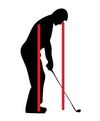

Driving
These are my latest important thoughts
- Proper setup of arm pit, knee caps, and middle foot all on same verticle line
- Your right hand on the club should be directly down from the eyes
- On the backswing, when the club reaches parrallel to the ground the face should be pointing directly up
- Balance!
- Slow tempo back
- For accuracy, only swing back till the left arm is parrallel to the ground
- For distance, increase turn


Home Driving Irons Short Game
Putting Journal